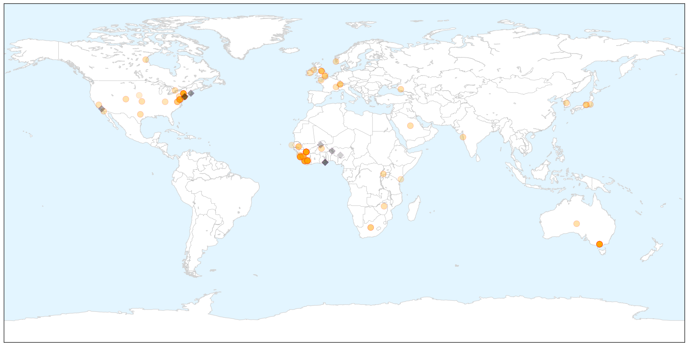
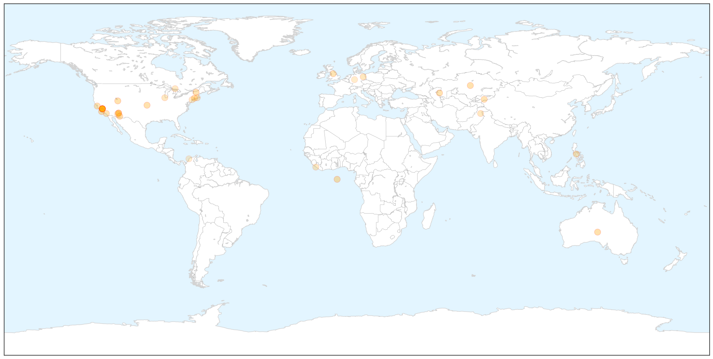

Ebola
30-Day Web Trend
0 alerts, 0 warnings

30-Day Twitter Trend
5 alerts, 4 warnings

Article Locations

X

Article Confidences

Top Articles:
- 1.000
- Children tested for Ebola at Melbourne hospital
- 1.000
- Two children being tested for Ebola virus at Royal Children's Hospital Melbourne are clear
- 1.000
- Two children being tested for Ebola virus at Royal Children's Hospital Melbourne are clear
- 1.000
- Two children being tested for Ebola virus at Royal Children's Hospital Melbourne are clear
- 1.000
- Ebola In Arlington County? Patient Rushed To Virginia Hospital With Virus-Like Symptoms, Infection ‘Unlikely’
- 1.000
- Girls cleared of Ebola in Melbourne Royal Children's Hospital
- 1.000
- Corgenix Receives FDA Authorization and WHO Listing for Emergency Use of Ebola Rapid Diagnostic Test
- 1.000
- The “Africanization” of Ebola
- 1.000
- Ebola virus death toll exceeds 9,500: WHO
- 0.999
- Ebola drug in Guinea helps some, stirs debate on broader use
- 0.999
- Two children hospitalized in Melbourne with suspected Ebola virus
- 0.998
- Sierra Leone reports sharp spike in Ebola cases
- 0.998
- Fatality Rate Is Falling in West African Ebola Clinics
- 0.997
- New York doctor who survived Ebola speaks out
- 0.996
- Ebola test developed by Tulane researchers wins 'game-changing' FDA approval
- 0.996
- Children tested for Ebola at Royal Children’s Hospital
- 0.996
- Melbourne sisters with respiratory infection test negative to Ebola
- 0.996
- Politico SL News The Ebola vaccine debate in Sierra Leone
- 0.995
- Sierra Leone reports sharp spike in Ebola cases
- 0.994
- Traces of Ebola remain in survivors
- 0.994
- U.S. Ebola Survivor Dr. Craig Spencer Gives His Side of the Story
- 0.994
- US wraps up Ebola military mission in Liberia
- 0.993
- Three day wait for Ebola test children
- 0.993
- Liberia leader thanks US as Ebola mission ends
- 0.993
- TJU, Institute Pasteur, and Thermo Fisher Scientific establish training programme – The Financial Express
- 0.993
- Base quarantines, other outbreak decisions on science
- 0.993
- Media, politicians fueled the public's fear
- 0.993
- New WHO Regional Director Commends Sierra Leone in the Fight against Ebola
- 0.992
- Children tested for Ebola at Melbourne hospital
- 0.992
- Ebola doctor: Media, politicians fueled the public's fear
- 0.992
- Quarantines Should Be Based on Science
- 0.992
- AU welcomes back first group of health workers deployed to fight Ebola
- 0.992
- Arlington Resident Checked for Ebola Thursday...
- 0.991
- Two young children being tested for Ebola in Melbourne
- 0.991
- I was never a risk: Doctor who carried Ebola virus from Guinea to New York City says media and politicians need to stop pandering to panic
- 0.991
- Sierra Leone reports sharp spike in Ebola cases
- 0.990
- Injured Westcountry medic flown back to UK after treating Ebola victims
- 0.990
- The most from the coast
- 0.990
- BAN concerned about gloomy economy « Awoko Newspaper
- 0.989
- Obama commission: Don't quarantine Ebola workers
- 0.989
- Ebola: Let's Remember the People at the Heart of the Outbreak
- 0.988
- Two children being tested for Ebola in Melbourne
- 0.987
- Medic put on Ebola watch from Westcountry-led mission in Sierra Leone
- 0.987
- New York Doctor Who Survived Ebola Says Media, Politicians Fueled The Public's Fear
- 0.984
- Ebola doctor Craig Spencer says media's disease hype was deadly
- 0.984
- The official website of the Republic of Korea
- 0.984
- Norwegian Health Minister Assures Sierra Leone
- 0.983
- Little girls cleared of deadly Ebola virus
- 0.982
- Press Release Distribution
- 0.981
- 99 Ebola cases in past week, nearly two-thirds in Sierra Leone: WHO
Showing top 50 articles...
Top Tweets:
- 0.993
- New confirmed Ebola cases (15-22 February): Guinea: 35 Sierra Leone: 63 Liberia: 1 Figures from the World Health Organization (WHO)
- 0.956
- Ebola Update: 23694 confirmed probable & suspected cases in 3 most affected countries with 9589 deaths. EbolaResponse
- 0.907
- Ebola Update: 23539 confirmed probable and suspected cases in 3 most affected countries with 9541 deaths. EbolaResponse
- 0.881
- RT: Ministry of Health in Liberia tells: Last 7 days no new cases of Ebola in the country. Great news but a backlash is but 1…
- 0.877
- What should happen to Liberia's Ebola Treatment Units as Ebola cases continued to decrease? @EbolaAlert AfricaAgainstEbola
- 0.792
- RT: Liberia has reported 10 Ebola cases in past 10 days. Great news. But hard to see how the vaccine trials can succeed. h…
- 0.784
- Fatality Rate in West Africa Ebola Clinics Is Dropping - New York Times http://t.co/qQpch0ZcqZ ebola EVD
- 0.784
- Fatality Rate in West Africa Ebola Clinics Is Dropping - New York Times http://t.co/ezoSgwu4Su ebola EVD
- 0.766
- ElbowOutEbola News: Ebola US quarantine for Ebola health workers 'morally wrong' -... http://t.co/q8IXy3MuXb
- 0.740
- US quarantine for Ebola health workers 'morally wrong' - The Guardian http://t.co/i4U445FWki ebola EVD
- 0.740
- US quarantine for Ebola health workers 'morally wrong' - The Guardian http://t.co/hb39hztPXQ ebola EVD
- 0.740
- Ebola: Two children being tested for virus at Royal Children's Hospital in ... - ABC Online http://t.co/tuHOEe2bQO ebola EVD
- 0.717
- BREAKING: Ebola Response in Clarendon - ARL now http://t.co/5fI90N4f13 ebola EVD
- 0.712
- We seem to think Ebola is over. But Guinea & Sierra Leone are still recording as many cases a week as many previous outbreaks had all told.
- 0.711
- Ebola endemic in west Africa remains a risk scientists warn - The Guardian http://t.co/hP9esFWz1Q ebola EVD
- 0.701
- Two children being tested for Ebola virus at Royal Children's Hospital Melbourne - Sydney Morning Herald http://t.co/i679KvIdRd ebola EVD
- 0.672
- Children tested for Ebola at Melbourne hospital - Yahoo!7 News http://t.co/3V3ZbokoG8 ebola EVD
- 0.641
- FDA approves Corgenix's Ebola test for emergency use - Reuters http://t.co/PiCsaEim79 ebola EVD
- 0.640
- Emergency responders investigate possible Virginia Ebola case - Yahoo News http://t.co/QdrViuZoAv ebola EVD
- 0.607
- Children tested for Ebola at Royal Children's Hospital - Herald Sun http://t.co/vzkmz8xVC1 ebola EVD
- 0.540
- RT: @EbolaAlert Would you say Ebola is interfering with the West African pr…
- 0.534
- Liberia leader thanks US as Ebola mission ends - Yahoo News http://t.co/xvLQAfV1jb ebola EVD
- 0.522
- Liberia has reported 10 Ebola cases in past 10 days. Great news. But hard to see how the vaccine trials can succeed. http://t.co/QlbFQKJOvG
- 0.510
- Results from encouraging Ebola trial scrutinized - Science AAAS http://t.co/oPm5Va4hyN ebola EVD
Measles
30-Day Web Trend
10 alerts, 5 warnings

30-Day Twitter Trend
2 alerts, 0 warnings

Article Locations

X

Article Confidences
Top Articles:
- 0.998
- California Reports No New Measles Cases Since Last Update
- 0.988
- Measles expert explains vaccine safety, virus risks
- 0.985
- Doctors worry measles outbreak will reach Connecticut
- 0.976
- Doctors Express directors weigh in on measles vaccine
- 0.976
- WHO calls for vaccinations against European measles epidemic
- 0.968
- Officials: Measles outbreak in state is over, cost $115,000 to manage
- 0.962
- Measles Resurfaces in Europe – WHO Calls for Widespread Vaccination
- 0.954
- Herd immunity and the vaccine personal belief exemption
- 0.952
- Why One Family With Measles Is Reconsidering Their Anti-Vax Position
- 0.952
- UN health agency taken aback as measles resurfaces in Europe calls for widespread vaccination
- 0.951
- UN health agency 'taken aback' as measles resurfaces in Europe, calls for widespread vaccination
- 0.947
- WHO calls for more measles vaccination in Europe
- 0.932
- Is measles' return the 'new normal'? - WLTZ 38
- 0.916
- Kazakhstan Suspends Measles Vaccination Campaign After Many Students Fall Ill
- 0.909
- Leave well enough alone
- 0.900
- Disneyland Measles Outbreak Slows as Vaccine Bill Gains Steam
- 0.898
- Parents who don’t immunize their children
- 0.884
- WHO Alarmed Over Big Measles Outbreak, Seeks More Vaccination in Europe
- 0.881
- Kazakhstan Suspends Measles Vaccination Campaign After Many Students Fall Ill
- 0.873
- Visitors to Long Grove Menards may have been exposed to measles
- 0.868
- Up to 1,500 BART riders possibly exposed to measles by infected passenger
- 0.841
- Dana Hills High School
- 0.797
- Another reason to get your measles vaccine
- 0.784
- How the success of vaccines gave rise to anti-vaxxers
- 0.784
- Europe urged to step up vaccinations against measles
- 0.748
- Measles outbreak in Germany continues to spread
- 0.732
- Potential Measles Exposures Flare Up In Palatine Laundromat...
- 0.730
- In Perspective: Measles 2015
- 0.725
- WHO calls for more efforts to fight measles
- 0.708
- 70% Un-vaccinated children at Risk for Measles
- 0.686
- I-Team: Many Private Schools Are Vulnerable to Measles
- 0.681
- Untitled Article
- 0.597
- UN Health Agency Urges Europe to Step up Measles Vaccination
- 0.567
- Letters: Measles vaccine saves lives- Letters to the Editor: Orange County Register
- 0.563
- WHO Urges Europe, Central Asia To Step Up Measles Vaccination
- 0.526
- Mom: We weren't 'willy-nilly exposing people' to measles
- 0.524
- Kearny mom speaks out about measles
Top Tweets:
-
No tweets found for Feb 26, 2015